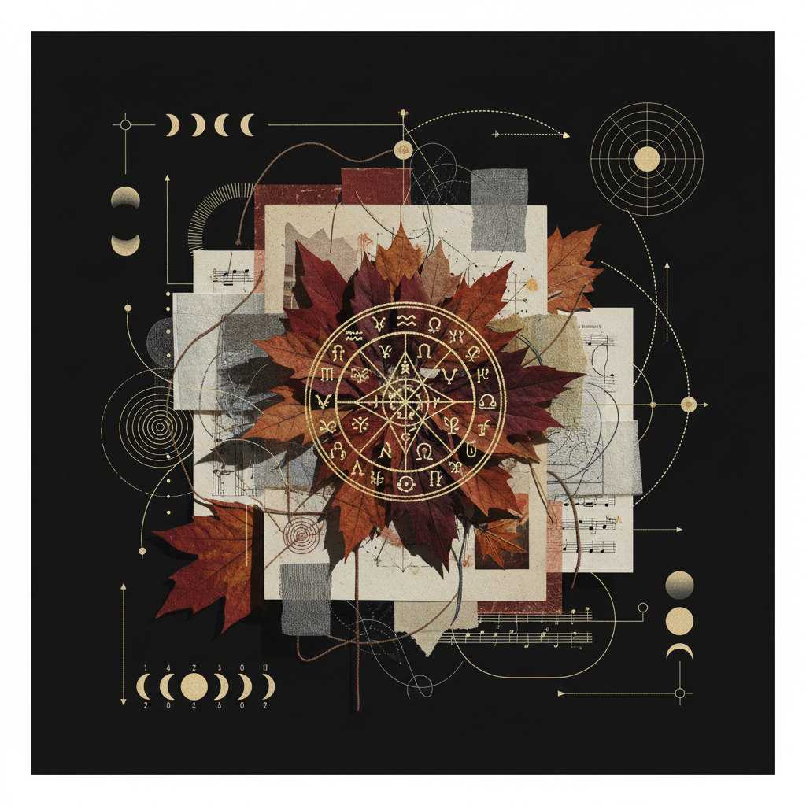

Workbook #1
From Bone
to Heart
A transitional alchemy between the Saturnian structure of Capricorn and the solar sovereignty of Leo.

Plate No. 042
The Calcination Process
Completion Status
Full Moon
Waning
Disseminating
Last Quarter
Balsamic
New Moon
The 14-Day Arc at a Glance
Illumination & Release
Confronting the structural shadows of Capricorn. Identifying the 'bones' that no longer support the weight of your emerging heart.
Descent & Gestation
The silence between worlds. A moment of deliberate stillness to allow the calcined remains to settle into fertile soil.
Intention & Emergence
The first spark of Solar energy. Leonine warmth begins to pulse within the structural framework established in Phase 01.
Action & Refinement
Embodying the sovereignty of Leo. Directing the heat of the heart to shape a new external reality.